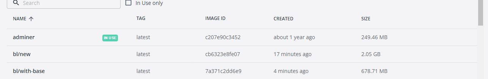

Software Process Engineering
Maraffa Online
Sofia Tosi, Matteo Santoro
2024-07-14
School of Mathematical, Physical and Computational Sciences
MaraffaOnline è un’applicazione che permette alle persone di giocare
al gioco di carte Maraffa/Beccacino.
Il progetto consiste nell’eseguire una manutenzione evolutiva del gioco
di carte reperibile su MaraffaOnline, attualmente sviluppato dalla
prof.ssa Lumini. In particolare la nuova versione avrà un’architettura a
microservizi e introdurrà anche nuove funzionalità come formazione
personalizzata delle squadre, una nuova modalità di gioco (vittoria 11 a
0 in caso di violazione delle regole da parte di una squadra),
salvataggio delle statistiche delle partite e degli utenti, ...
Per lo sviluppo è stato seguito un approccio Domain Driven Design, per
il quale si è approfondito il dominio del gioco.
È stata posta particolare attenzione alle tecniche di continuos
integration, alle quali è stato dedicato uno dei capitoli di questo
report.
Per ottenere maggior chiarezza sul dominio è stato utilizzato il metodo Even Storming. La tecnica consiste nell’individuare degli eventi di dominio e riportarli al passato su un post-it arancione. Una volta individuati gli eventi, sono stati scritti su post-it blu i comandi che l’utente svolge per creare l’evento. In giallo è stato specificato l’attore, la persona che esegue il comando, mentre in verde la view, l’interfaccia software con la quale l’utente interagisce. Infine, con delle label si sono aggregati i post-it in unità di dominio. Si riporta di seguito lo screen della lavagna con i post-it e la relativa legenda.

max width=1.1,center
| Nome | Descrizione | Sinonimi |
|---|---|---|
| Mano | Distribuzione delle 40 carte ai 4 giocatori e la seguente serie di 10 prese | Round |
| Mano | Carte dei giocatori non ancora giocate | Hand |
| Presa | Quando ogni giocatore, a turno, gioca sul tavolo una carta. L’ultima presa della mano vale 1 punto. | Trick |
| Partita | Insieme di più mani fino al raggiungimento del punteggio di 41 punti. | Game |
| Partita corta | Insieme di più mani fino al raggiungimento del punteggio di 31 punti. | Short Game |
| Tavolo | Raggruppamento di 4 giocatori, suddivisi in 2 coppie, i giocatori delle stessa squadra “siedono” in direzione opposta | Table |
| Seme | Tipologia distintiva di carta, ne esistono 4: Denari, Coppe, Spade, Bastoni | Suit: Coins, Cups, Swords, Clubs |
| Briscola | Seme con priorita’ piu’ alta. | Trump |
| Maraffa | Se un giocatore possiede le tre carte di valore maggiore (asso, due e tre, dette assieme "Maraffa" o "Cricca") del seme di briscola, vince tre punti addizionali. In questo caso deve scendere con l’asso di quel seme. | Cricca, Marafon, Tresette con la Briscola |
| Mazzo | 40 carte, di 4 semi diversi, 1,2,3,4,5,6,7, fante, cavallo e re. | Deck |
| Taglio | Durante una mano in un seme viene giocato il seme di briscola, che avendo priorita’ maggiore permette di prendere nonostante il seme di gioco | Cut |
| Busso | Invita il compagno, se possibile, a conquistare la presa e ad aprire il turno successivo con lo stesso seme | Knock |
| Striscio corto | Quando si ha ancora in mano un basso numero di carte dello stesso seme con cui si è aperto il turno. | Short strip |
| Striscio lungo | Quando si ha ancora in mano molte carte dello stesso seme con cui si è aperto il turno. | Long strip |
| Volo | Quando non si hanno più carte del seme con cui si è aperto il turno. | Fly |
| Figura | Fante, Cavallo, Re, con punteggio di 1/3 di punto. | Figure |
| Asso | Carta con valore di 1 punto. | Ace |
| Due e Tre | Carte con valore 1/3 di punto. | Two and Three |
| Carta Liscia | Carte con numeri 4, 5, 6, 7. Sono prive di valore | Smooth paper |
| Squadra | Coppie di giocatori seduti opposti | Team |
| Giocatore | Persona che interagisce con l’applicativo | Player, User |
| Chiamata fuori | Se un giocatore pensa che la sua squadra abbia raggiunto i 41 punti (o 31 punti nella variante "corta" della partita), la squadra può dichiarare di avere già nel mazzo delle prese i punti per vincere e chiudere in anticipo l’ultima partita. In questo modo la mano termina immediatamente, senza che vengano giocate le restanti prese e la squadra che si è "chiamata fuori" impedisce all’altra squadra di conquistare ulteriori prese. Se una squadra si chiama fuori e, dopo aver contato i punti delle prese effettuate ed averli sommati ai punti ottenuti nelle mani già giocate, non raggiunge i punti per la vittoria (in gergo "sbaglia la chiamata") scatta automatico l’11 a 0 per la squadra avversaria | Call out |
| Modalità di gioco | regole di gioco classiche o varianti che influenzano aspetti come il punteggio, condizioni di vittoria/perdita, ... Ne sono state implementate due: classica, 11 a 0. | Game mode |
Analizzando il dominio di MaraffaOnline, sono stati identificati tre bounded context. Nella figura si può osservare un primo bounded context, colorato di azzurro, che modella l’autenticazione dell’utente:
User: persona che possiede l’account
Statistic: dati dell’utente relativi al gioco come numero di vittorie, sconfitte, partite giocate e maraffe
Authentication: accesso all’applicativo MaraffaOnline da parte dell’utente
Il secondo bounded context, colorato di verde, modella la partita:
Game: partita
Team: squadra composta da numero di giocatori / 2
Score: punteggio delle due squadre
Statistic: dati relativi ai game giocati
Trick: presa di quattro carte da parte di un giocatore
Round: 10 prese
Card: carta
Player: giocatore
Deck: mazzo
Hand: carte che ha in mano un giocatore
Infine l’ultimo, di colore arancione, modella la chat:
Chat: chat di gioco
Message: messaggio inviato nella chat
User: persona che invia il messaggio
È importante notare che il concetto di user/player è polisemico: vi sono tre rappresentazioni diverse per afferire allo stesso concetto.

Account
Login
Registrazione
Recupero password
Visualizzazione profilo
Modifica password
Possibilità di scegliere se giocare come ospite o effettuare il login
Realizzazione partita
Creazione partita
Partecipazione partita
gioca carta
Inizio partita
Fine mano
Fine partita
Chat di gioco
chat globale
chat partita
Possibilità di scegliere un compagno di squadra
Scelta del seme, parole consentite
Modalità di gioco 11 a 0
Gestione punteggio
Calcolo totale e parziale (Gestione per ogni mano) del punteggio
Maraffa/Cricca (+3 punti)
Servizio gestione utenti
Salvataggio statistiche
Realizzazione GUI
Refactor della GUI esistente
Rinnovamento GUI
Si riporta di seguito lo schema dei casi d’uso che modella l’interazione dell’utente con l’applicazione.

**Spiegare per quale motivo i pattern del DDD non sono stati applicati** (shared kernel, publish consumer, ...)
Per ogni release è stato adottato il semanting Versioning. È stato utilizzato il formato X.Y.Z, partendo da 1.0.0, ogni release incrementa il numero di versione in base a:
Major (X): per cambiamenti incompatibili con le versioni precedenti
Minor (Y): per aggiunta di nuove funzionalità compatibili con le versioni precedenti
Patch (Z): per correzione di bug compatibili con le versioni precedenti
Per ogni release viene creato anche un tag con la corrispondente versione.
Ogni volta che is effettua una push sul main, viene generato un changelog. Il changelog è un file che contiene tutte le modifiche effettuate. Nel changelog vengono riportati ogni commit che indicano le modifiche apportate, i contributori e il codice sorgente. Se presenti, vengono inoltre riportate le sezioni:
feat: Feature per le nuove funzionalità
fix: Bug Fixes per le correzioni di bug
docs: Documentation per le modifiche alla documentazione
refactor: Refactor per le modifiche al codice che non aggiungono nuove funzionalità
perf: Performance Improvements per le modifiche che migliorano le prestazioni
CI: Continuos Integration per le modifiche alla CI
Il changelog viene autogenerato tramite l’action ’BobAnkh/auto-generate-changelog@v1.2.5’. Inoltre per evitare un accesso non autorizzato a dati sensibili, come l’access token del changelog, sono stati inseriti in secrets, variabili d’ambiente di Github.
In ogni nostra repo è presente una licenza MIT. È stata scelta questa licenza perché è estremamente permissiva: il codice sorgente di Maraffa Online è open source e pertanto gli utenti possono utilizzarlo, modificarlo e distribuirlo. Inoltre la licenza MIT è compatibile anche con altre licenze, anche con quelle restrittive come GPL. È incoraggiata la collaborazione anche grazie alla presenza di un template con il quale un utente può consigliare nuove feature, segnalare un bug o suggerire un’implementazione alternativa.
Come strumento di controllo di versione è stato scelto git, sono state adottate le seguenti best practices o git policy per garantire un flusso di lavoro coerente e prevenire conflitti di merge.
Una delle componenti principali della Git Policy è la gestione dei branch. La struttura tipica prevede almeno tre tipi di branch:
Master/Main: Questo è il branch principale che contiene il codice di produzione. Ogni commit su questo branch dovrebbe essere stabile e pronto per il rilascio. Questo branch e stato protetto per evitare commit diretti, richiedendo quindi una revisione per ogni operazione di merge.
Develop: Qui viene integrato il lavoro di sviluppo corrente. È il branch dove confluiscono le feature prima di essere preparate per il rilascio. Questo branch dovrebbe essere costantemente aggiornato e testato per assicurare che sia in uno stato pronto per la produzione.
Feature Branches: Utilizzati per lo sviluppo di nuove funzionalità. Ogni feature branch deve derivare da ‘develop‘ e, una volta completata la feature, viene reintegrato in ‘develop‘ tramite una pull request.
Le pull request (PR) sono essenziali per garantire la qualità del codice. Ogni PR è stata sottoposta a una code review da parte di uno o più membri del team. Questo processo non solo aiuta a individuare errori e problemi di design, ma promuove anche la condivisione delle conoscenze e facilita, tramite la comparazione di codice, la spiegazione di nuove funzionalità introdotte entro la fine dello sprint.
I conflitti di merge sono inevitabili in un ambiente di sviluppo collaborativo soprattutto quando è difficile modulare le parti di un SW. La scelta tra merge e rebase è stata fatta in base al contesto e alla complessità delle modifiche, privilegiando la chiarezza della storia del codice seppur a discapito della linearità, quindi di utilizzare il merge per mantenere una storia del codice più pulita e continua. Questo è particolarmente utile per tracciare l’evoluzione del progetto e per individuare facilmente l’origine dei bug. Infatti con il rebase c’è il rischio che venga cancellata una parte della history. In alcuni casi, può risultare molto pericoloso e può introdurre rischi significativi se non utilizzato con estrema cautela: ipotizzando di introdurre un bug e successivamente di eseguire il rebase che cancella dalla history la modifica che ha introdotto il bug, risulterebbe particolarmente ostico tracciare le modifiche e risalire a questo cambiamento. Potenzialmente può creare anche confusione tra i membri del team.
Per implementare efficacemente queste best practices, è utile utilizzare strumenti di supporto come: - Git Hooks: Script che vengono eseguiti automaticamente in determinati punti del flusso di lavoro di Git, come prima di un commit o dopo un merge. Possono essere utilizzati per verificare la qualità del codice, eseguire test automatizzati, o applicare formattazioni standard. - Linting e Formattazione Automatizzata: Utilizza strumenti come ESLint o Prettier per mantenere uno stile di codice coerente e rilevare potenziali errori prima che vengano committati. - Monitoraggio e Analisi: Strumenti come SonarQube possono analizzare il codice per trovare problemi di sicurezza, bug, e debito tecnico.
È stato utilizzato il meccanismo di commit verification per assicurare:
Integrità: controllo sull’alterazione dei file presenti all’interno del commit. Utilizzando una funzione hash, ci si assicura che non siano stati alterati in non modo autorizzato.
Autenticità: controllo sull’autore del commit. Utilizzando una firma digitale, ci si assicura che il commit sia stato effettuato dall’autore autorizzato.
I controlli vengono effettuati in seguito a un merge.
Quando un commit è verificato viene prodotto un tag verde con la scritta
"verified" e un tag rosso con la scritta "unverified" in caso
contrario:
La pratica adottata per i commit è stata quella di effettuare commit frequenti e significativi.
In ogni repo è stato adottato un sistema standard per scrivere i commit: i conventional commit. In questo modo i commit risultano più chiari e facilmente leggibili. Riportiamo di seguito la nomenclatura usata:
fix: per i commit che risolvono un bug
feat: per i commit che aggiungono una nuova feature
refactor: per i commit che migliorano il codice senza aggiungere nuove funzionalità
docs: per i commit che riguardano la documentazione
style: per i commit che riguardano la formattazione del codice
test: per i commit che riguardano i test
ci: per i commit che riguardano la Continuous Integration
Inoltre sono evidenziati i breaking changes per le modifiche non più compatibili con le versioni precedenti. La stessa nomenclatura viene utilizzata anche nel changelog.
Abbiamo deciso di implementare ogni servizio in una repository
diversa. La repository fornita è un contenitore di tutte le singole
repository dei servizi. Per ogni repository è stata implementata una CI
specifica.
Essendo le due repository estremamente simili e avendo entrambe un ambiente in node.js, è stato implementato un workflow pressochè analogo. Questo workflow reagisce all’evento push sul main branch, e pull request sui branch main e develop e sono stati implementati 3 job: build, test e deploy. Dopo una checkout iniziale (fetch-depth è 0 in quanto il changelog necessita di tutta la history dei commit), viene creata una cache per permettere ai job di comunicare tra loro. Successivamente alla build il sistema viene testato (in entrambi i casi viene usata l’action di yarn) e infine viene effettuato il deploy del servizio containerizzato se l’evento è una pull request con la quale viene svolto il merge e quando l’action è closed (non sta progredendo e quindi l’esecuzione non è in corso). Nel deploy viene effettuato il chekout, si configura il nome del progetto, si configura la versione della build. Se il commit viene effettuato sul main si configura il nome del tag e la versione a "LATEST", nel caso non fosse nel main viene configurata la versione a "develop". Infine si effettua il login al Github container registry, la build e la push dell’immagine sul registro. L’immagine viene configurata in modo parametrico con delle variabili d’ambiente e il nome viene trasformato in minuscolo.
//TODO push su main, pull request su main e develop build e test se pullrequest.merge = true
Parte finale
ChatServer: Il servizio è sviluppato in un ambiente Java, pertanto dopo aver effettuato il checkout nel job build and test, si effettua il set-up di Java (distribuzione: temurin, versione 20). Viene svolto il set-up di Gradle, in cui viene usata un’action per la build e creata una cache. Inoltre viene aggiunto un commento con un riassunto dei risultati dei job alla pull request, il cui valore è impostato a "on-failure". Si noti che il suo valore di default è "never"; se fosse "always", si potrebbero verificare scenari indesiderati. Il riassunto dei risultati dei job risulta particolarmente utile: un utente che vuole esaminare la pull request riesce a comprendere lo stato dei job (se sono stati eseguiti correttamente oppure no) in modo leggibile e intuitivo. Successivamente si effettua il deploy del container di rabbitMQ se l’evento è una pull request oppure se è una push sul master o se la stringa con il riferimento a github contiene "tags/v". Infine se tutti il job da cui dipende (build-and-test) non è fallito e non è stato interrotto. Con l’istruzione run si verifica che non ci siano stati dei fallimenti nel job deploy and test.
FrontendMaraffa: //TODO Sarebbe figo spiegare come i nostri workflow hanno ridotto i conflitti di integrazione, il rilevamento precoce di bug e i problemi di compatibilità.
Per ogni servizio in questo sistema è stato adottato, ove possibile, il paradigma di programmazione TDD, cioè Test Driven Development. Questo approccio prevede che i test siano scritti prima del codice, in modo da guidare lo sviluppo e garantire che il codice prodotto soddisfi i requisiti specificati. All’interno della CI, la fase di test è stata implementata con Jest per quanto riguarda i servizi che usano Node.js, generando di fatto un report abbastanza comprensibile direttamente nella finestra della CI. Il componente middleware, scritto in Java, invece, generava risultati di test non così chiari. Per modificare questo comportamento, è stata introdotta una dipendenza nel build Gradle che permette di avere un report più dettagliato e comprensibile. La libreria Test Logger, tramite una piccola configurazione nel file build.gradle come qui riportata, ha soddisfatto le nostre esigenze.
import com.adarshr.gradle.testlogger.TestLoggerExtension
import com.adarshr.gradle.testlogger.TestLoggerPlugin
import com.adarshr.gradle.testlogger.theme.ThemeType
testlogger {
theme = ThemeType.MOCHA
showExceptions = true
showStackTraces = true
showFullStackTraces = false
showCauses = true
slowThreshold = 2000
showSummary = true
showSimpleNames = false
showPassed = true
showSkipped = true
showFailed = true
showOnlySlow = false
showStandardStreams = false
showPassedStandardStreams = true
showSkippedStandardStreams = true
showFailedStandardStreams = true
logLevel = LogLevel.LIFECYCLE
}È stato trovato un utilissimo strumento per poter velocizzare il processo di creazione della CI, Act. Questo strumento permette di eseguire le GitHub Actions localmente senza dover obbligatoriamente fare un push sul repository e quindi senza "sporcare" la cronologia dei commit. Richiede che Docker sia attivo ed è in grado di creare un container che utilizza l’immagine specificata nel file di configurazione della CI e di eseguire i job. Per eseguire Act è stato creato uno script in bash per poter automatizzare ulteriormente il testing delle CI, in cui viene letto il contenuto del file .env.example che popolerà l’environment del container con le variabili d’ambiente necessarie per il corretto funzionamento della CI, e le imposta come variabili d’ambiente della GitHub Action che si sta testando. Per poter usare Act è necessario semplificare leggermente il trigger per i job, che in ambiente di produzione è solitamente la chiusura di una pull request, mentre per testare velocemente è necessario impostarlo su una push.
Durante lo sviluppo dei servizi è stata adottata una politica di code quality e linting per garantire la coerenza e la leggibilità del codice.
Per i servizi in Node.js, sono stati utilizzati ESLint assieme a Prettier. ESLint è uno strumento di analisi statica del codice che aiuta a identificare e correggere gli errori di codice, le pratiche non ottimali e le violazioni dello stile di codice. Questi strumenti necessitano soltanto di un file di configurazione che è presente nelle repository e che i software per la scrittura di codice, come ad esempio VSCode, possono adoperare.
Il componente in Java ha adottato Checkstyle, un tool di analisi statica del codice che aiuta a garantire che il codice Java rispetti uno standard di codifica predefinito. Anche in questo caso è stato sufficiente aggiungere una dipendenza nel build.gradle per ottenere un report dettagliato e comprensibile ed un file di configurazione che è stato inserito nella repository. Per automatizzare il processo di formattazione del codice il più possibile è stata aggiunta la libreria Spotless. L’aggiunta di queste dipendenze nel file build.gradle è stata sufficiente per garantire la formattazione del codice e la sua coerenza.
spotless {
java {
importOrder() // standard import order
removeUnusedImports()
googleJavaFormat() // has its own section below
eclipse() // has its own section below
}
}
checkstyle {
toolVersion = "8.44" // Versione di Checkstyle
configFile = file("${rootDir}/config/checkstyle/checkstyle.xml") // Configurazione di Checkstyle
// showViolations = true
}Dopo aver eseguito i controlli di stile sul codice sono stati trovati numerosi errori e warning, che sono stati corretti automaticamente da un plugin che ha sistemato ciò che Spotless non era riuscito a correggere. Il plugin in questione è OpenRewrite, che ha permesso di correggere molti errori e di risparmiare un lungo e noioso lavoro di correzione manuale.
Changes have been made to app\src\main\java\userModule\UserController.java by:
org.openrewrite.staticanalysis.CodeCleanup
org.openrewrite.java.format.MethodParamPad
Changes have been made to app\src\main\java\userModule\UserService.java by:
org.openrewrite.staticanalysis.CodeCleanup
org.openrewrite.staticanalysis.NeedBraces
Changes have been made to app\src\test\java\integration\BusinessLogicTestIntegration.java by:
org.openrewrite.staticanalysis.CodeCleanup
org.openrewrite.java.format.MethodParamPad
Please review and commit the results.
Estimate time saved: 1h 24m Dopo aver corretto gli errori di stile, è stato generato il Javadoc per il codice, in modo da avere una documentazione automatica e aggiornata. Inoltre, è stato creato un sito web tramite GitHub Pages per avere una documentazione più user-friendly e facilmente accessibile.
Per fare ciò si è optato per l’utilizzo di una GitHub Action che, tramite condizioni come una push su determinati branch, genera automaticamente il Javadoc. Questa documentazione viene pubblicata su un branch ‘javadoc‘, automaticamente creato, e tramite le impostazioni del repository, viene pubblicata su GitHub Pages, in modo da avere una documentazione sempre aggiornata e facilmente accessibile.

La documentazione del componente middleware sarà sempre reperibile all’
indirizzo delle githubpages del progetto con il suffisso javadoc
come ad esempio https://sofy24.github.io/MiddlewareMaraffa/javadoc/.
name: Deploy Javadoc
on:
push:
branches: [main, "develop", "style-doc"]
jobs:
publish:
runs-on: ubuntu-22.04
permissions:
contents: write # if you have a protection rule on your repository, you'll need to give write permission to the workflow.
steps:
- name: Checkout
uses: actions/checkout@v4
- name: Deploy JavaDoc
uses: MathieuSoysal/Javadoc-publisher.yml@v2.5.0
with:
GITHUB_TOKEN: ${{ secrets.GITHUB_TOKEN }}
javadoc-source-folder: app/build/docs/javadoc
javadoc-branch: javadoc
java-version: 20
target-folder: javadoc # url will be https://<username>.github.io/<repo>/javadoc, This can be left as nothing to generate javadocs in the root folder.
project: gradle**automatizzare l’esecuzione iniziale del sistema con build.gradle che specifica come il file deve compilare, gestire dip e configurare altri apetti del build process**
è opzionale
Data l’architettura del progetto in microservizi, usare Docker per creare un’immagine per ogni servizio è stata una scelta naturale. L’obiettivo finale è avere un sistema facilmente deployabile e scalabile, eseguibile velocemente in un ambiente generico, con uno stack di container Docker che racchiuda tutto il sistema. Per fare ciò è stato necessario creare un Dockerfile per ogni servizio, in modo da poter creare un’immagine durante la fase di deploy della continuous integration.
La strategia di containerizzazione per tutte le immagini create è stata quella di utilizzare un’immagine base di Alpine, in modo da avere immagini leggere e veloci da scaricare. Per ridurre la dimensione delle immagini, si è utilizzata un’immagine di sviluppo per compilare il codice e un’immagine di produzione per eseguire il codice compilato, copiando solo i file necessari.

I servizi UserManagementMaraffa e BusinessLogic sono stati containerizzati utilizzando un’immagine di Node.js. Nell’esempio sotto, si può notare la distinzione tra i diversi stage.
FROM node:20-alpine as base
WORKDIR /app
COPY yarn.lock package.json /app/
RUN yarn install
COPY . /app
RUN yarn build
FROM node:20-alpine
WORKDIR /app
COPY --from=base /app/package.json /app/package.json
COPY --from=base /app/node_modules /app/node_modules
COPY --from=base /app/dist /app/dist
EXPOSE 3000
CMD ["node","dist/main.js"]La containerizzazione del middleware ha richiesto alcuni passaggi aggiuntivi rispetto ai servizi in Node.js. È stato necessario adottare immagini diverse per gli stage di build e produzione, quindi usare un’immagine di Gradle per la build, nella quale eseguire i comandi di Gradle, e un’immagine di OpenJDK per l’esecuzione del JAR prodotto dalla build.
Per la compilazione con Gradle, nonostante non sia una pratica corretta, è stato necessario mantenere nella repository il file gradle-wrapper.jar, in quanto non era possibile scaricarlo durante la build all’interno delle GitHub Actions. La build non utilizza il classico comando di Gradle per generare il file .jar, ma un task personalizzato che si occupa di generare il fatJar del servizio, poiché le dipendenze non venivano gestite correttamente all’interno del normale file .jar.
tasks.register<Jar>("fatJar") {
archiveBaseName.set("Middleware")
manifest {
attributes["Main-Class"] = "server.Main"
}
from(sourceSets.main.get().output)
dependsOn(configurations.runtimeClasspath)
from({ configurations.runtimeClasspath.get().filter { it.name.endsWith("jar") }.map { zipTree(it) } })
dependsOn("compileJava")
duplicatesStrategy = DuplicatesStrategy.EXCLUDE // Puoi utilizzare altre strategie come DuplicatesStrategy.WARN per avvisare ma non fermare la build
}La containerizzazione del frontend ha richiesto l’utilizzo di un’immagine di Node.js per lo stage di build, mentre per l’esecuzione è stata utilizzata un’immagine di Nginx. Nginx serve per eseguire l’applicazione all’interno del container e per poterla raggiungere dall’esterno. Per fare ciò è stato necessario configurare Nginx tramite un file di configurazione che ha permesso anche di gestire un’operazione di reverse proxy per indirizzare le chiamate al backend.
server {
listen 80;
location / {
root /usr/share/nginx/html;
index index.html index.htm;
try_files $uri $uri/ /index.html;
}
location /api/ {
proxy_pass "http://${API_HOST}:${API_PORT}/";
proxy_http_version 1.1;
proxy_set_header Upgrade $http_upgrade;
proxy_set_header Connection 'upgrade';
proxy_set_header Host $host;
proxy_cache_bypass $http_upgrade;
}
}L’indirizzo del backend è stato configurato tramite variabili d’ambiente, in modo da poterlo cambiare facilmente in base all’ambiente in cui si trova il container, e queste variabili vengono sostituite a seconda dell’ambiente di deploy in cui l’applicativo Angular viene eseguito.
Data la scelta di dockerizzare interamente i servizi, è stato necessario l’utilizzo di variabili d’ambiente. Questo ha permesso di creare un sistema di deploy molto flessibile, in cui è possibile cambiare l’indirizzo del servizio a cui connettersi semplicemente modificando il file di configurazione del Docker Compose. I servizi in NodeJS leggono il contenuto delle variabili d’ambiente tramite il modulo ‘process.env‘, mentre i servizi in Java utilizzano ‘System.getenv‘. Questi comportamenti sono corretti per lo sviluppo locale e per ambienti di produzione in cui le variabili d’ambiente sono settate correttamente.
Per quanto riguarda invece lo sviluppo in CI, è stato necessario creare un file ‘.env.example‘ che contenesse tutte le variabili d’ambiente necessarie al funzionamento del servizio, in modo da poterle settare correttamente nel CI/CD, soprattutto per la fase di testing, e metterlo sulla repository. È importante tenere a mente che non dovrebbero mai essere caricati dati sensibili su strumenti di controllo di versione. In questo caso, non ci sono database o account cloud eventualmente raggiungibili dall’esterno.
Infine il risultato prodotto è stata un file docker-compose che raggruppa tutti i servizi in un unico stack, definendo le dipendenze tra i container e semplificando il deploy è stato creato un network interno per poter permettere la comunicazione dei container tra di loro e particolari network invece per connettere i database ai servizi che ne fanno uso. Sono state inserite anche delle dipendenze tra i servizi, ad esempio lo user service ha come vincolo che il container del database sia avviato prima di esso. Sono stati inseriti dei servizi che permettono di monitorare i database:
Adminer: un’interfaccia web per la gestione dei database, che permette di visualizzare i dati, creare tabelle, eseguire query e molto altro.
Mongo Express: un’interfaccia web per la gestione dei database MongoDB.
TODO quando potremo testare un po’meglio e essere sicuri che effettivamente funzioni
Per lo sviluppo di questa, e di future relazioni, è stata creata una CI/CD. Questa è poi stata inclusa a sua volta in un template GitHub appositamente nato per lo sviluppo di nuove relazioni. Contiene una serie di documenti in LaTeX, che rappresentano uno scheletro per le relazioni, e la CI per poter pubblicare la relazione in continuous integration in formato HTML sulla piattaforma GitHub Pages e fornire una release contenente il PDF della relazione. L’utilizzo di GitHub rende lo sviluppo della relazione più semplice, non obbligando a scegliere strumenti come Overleaf come editor di testo, mantenendo la relazione versionata e permettendo di lavorare in parallelo con altri membri del team sfruttando tutte le comodità offerte da Git.
A questo link il template spiega alcuni dei passaggi per poterlo utilizzare. In alternativa, è stato inserito anche un file bash che permette, tramite un container Docker, di creare localmente il PDF della relazione utilizzando i software pandoc e latexmk.
Sono stati fondamentali i lavori di Memer Gamer per la base del workflow delle pubblicazioni su GitHub Pages e Varun Ojha per il template.
**spiega che verrà messo online nel sitoweb **
**Replace with a description of the conclusions**
Typically a conclusions chapter first summarizes the investigated problem and its aims and objectives. It summaries the critical/significant/major findings/results about the aims and objectives that have been obtained by applying the key methods/implementations/experiment set-ups. A conclusions chapter draws a picture/outline of your project’s central and the most signification contributions and achievements.
A good conclusions summary could be approximately 300–500 words long, but this is just a recommendation.
A conclusions chapter followed by an abstract is the last things you write in your project report.
This section should refer to Chapter [ch:results] where the author has reflected their criticality about their own solution. The future work is then sensibly proposed in this section.
Guidance on writing future work: While working on a project, you gain experience and learn the potential of your project and its future works. Discuss the future work of the project in technical terms. This has to be based on what has not been yet achieved in comparison to what you had initially planned and what you have learned from the project. Describe to a reader what future work(s) can be started from the things you have completed. This includes identifying what has not been achieved and what could be achieved.
A good future work summary could be approximately 300–500 words long, but this is just a recommendation.